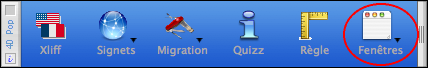
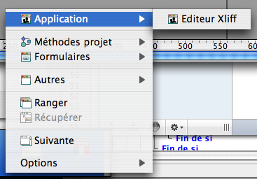

Utilisation
Le menu proposé comprend :
1) les fenêtres ouvertes de la base présentées sous forme hiérarchique par type.
- Un premier groupe nommé "Application" est constitué des fenêtres ouvertes dans les process autres que les process 4D.
Typiquement ce sont les fenêtres que vous avez créées en mode application ou pour tester votre développement.

- Un second groupe comprend les items "Méthodes projet", "Formulaires", "Méthodes base" et "Triggers" regroupant respectivement ces différents types de fenêtres dans un menu hiérarchique attaché à chacun des items.
Dans l'item "Formulaires", chaque formulaire ouvert est représenté par une ligne à son nom asssocié à un sous-menu regroupant tous les éléments de ce formuliare actuellement en cours d'édition : méthode formulaire et méthodes objet de tous les objets du formulaire.
- Le dernier groupe "Autres" rassemble les diverses fenêtres ouvertes en mode développement (explorer, Boîtes à outils...)
2) des outils de gestion des fenêtres
- "Ranger" permet de réorganiser les fenêtres ouvertes en cascade.
- "Récupérer" replace dans l'écran une fenêtre qui serait inaccessible après un changement de machine ou de résolution.
- "Suivante" permet de passer au premier plan la fenêtre immédiatement située après la fenêtre de premier plan courante.
- "Options" permet de régler certains aspects du comportement du composant dont l'action par défaut associée au bouton de la palette.
Code source fourni
Ce composant est fourni en version compilée, mais vous trouverez le code source dans le dossier "Sources" à l'intérieur du dossier du composant.
Forum
Un forum pour 4DPop est disponible à cette adresse : Forum 4DPop